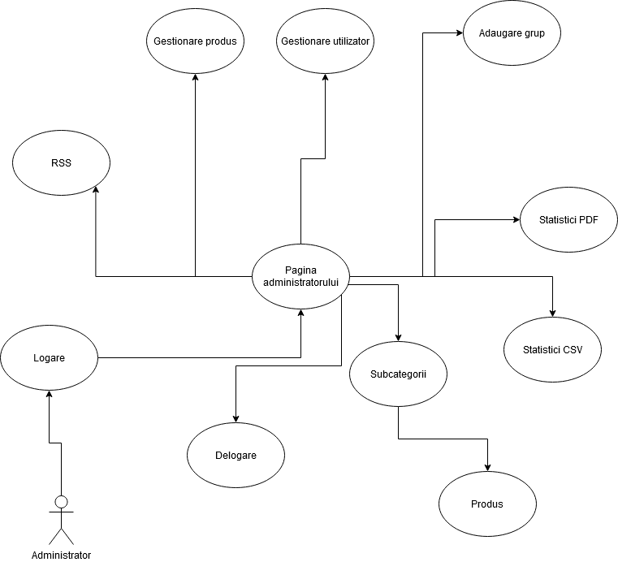

FORG project
Food Organizer
- Autori
-
Onofrei Claudia & Popescu Diana Elena & Spulber Claudiu
Descrierea proiectului
FORG este o aplicatie web care ajuta la gestionarea preferintelor culinare ale unei persoane sau grup de persoane. Aplicatia ofera suport pentru stocarea unor date aferente produselor existente( nume, pret, locatii unde se gaseste, descriere, ingrediente, etc. ). De asemenea, sistemul ofera suport pentru realizarea listelor de cumparaturi de catre clienti, dar si administrarea utilizatorilor si produselor de catre administrator.
Se pot genera statistici diverse care pot fi exportate in diferite formate - CSV, PDF. De asemenea, este prezent si un clasament al celor mai populare produse, sub forma unui flux de date RSS.
Tehnologii utilizate
Pentru realizarea interfeței utilizatorului, am utilizat limbajele HTML, CSS si JavaScript.
Pentru partea de back-end, limbajul utilizat este PHP. Iar pentru stocarea datelor am folosit MySQL.
Sistemul de stocare al codului
Pentru stocarea și managementul online al codului-sursă folosim GitHub:
Repository-ul de pe GitHub
Pentru o buna organizare si comunicare am folosit aplicatia Discord.
Funcționalități ale aplicației
Pentru ca utilizatorul sa se poata bucura de facilitatile aplicatiei FORG este necesara autentificarea lui.
Dupa autentificare sau logare, clientul are urmatoarele posibilitati:
- Informarea cu privire la aplicatia FORG si la cum poate fi ea utilizata
- Vizualizarea produselor grupate pe categorii( Soups, Desserts, etc.)
- Vizualizarea fiecarui produs in parte, alaturi de informatii aferente
- Adaugarea unui produs la Lista de cumparaturi sau adaugarea lui la Favorite
- Vizualizarea listelor de cumparaturi
- Vizualizarea si editarea contului personal, care include informatiile persoanale ale utilizatorului dar si produsele adaugate la favorite
- Crearea unui grup de utilizatori
- Cautarea anumitor produse
-
Posibilitatile administratorului sunt:
- Vizualizarea produselor grupate pe categorii( Soups, Desserts, etc.)
- Vizualizarea, adaugarea sau stergerea unui produs
- Adaugarea unui grup nou
- Adaugarea sau stergerea unui cont de utilizator
- Exportarea in format CSV, PDF si RSS a unor date
- Cautarea anumitor produse
Detalii despre arhitectura
Maniera de interacțiune cu utilizatorul

Maniera de interactiun a administratorului

Modelarea datelor

Etapele de dezvoltare
Partea de front-end a aplicatiei FORG a fost realizata dupa urmatorii pasi:
Onofrei Claudia:
- Meniul aplicatiei
- Header
- Footer
- Pagina principala
- Pagina de contact
- Pagina de search
Popescu Diana Elena:
- Pagina unui produs
- Pagina cu lista de cumparaturi a utilizatorului
- Pagina administratorului
- Pagina de adaugare produs/ stergere produs pentru administrator
- Pagina de adaugare/ stergere cont de utilizator pentru administrator
- Pagina adaugare a unui grup de utilizatori pentru administrator
- Pagina de autentificare
- Pagina de inregistrare
Spulber Claudiu:
- Pagina cu categoriile de produse
- Pagina contului de utilizator
- Pagina de adaugare grup pentru utilizator
- Pagina unui grup de utilizatori
Partea de back-end a aplicatiei FORG a fost realizata in urmatorul mod:
Onofrei Claudia:
- Meniul aplicatiei
- Search bar
- Pagina de contact
- Adaugare/ stergere produs pentru administrator
- Adaugare/ stergere user pentru administrator
- Adaugare grup pentru administrator
- Export date in format PDF
Popescu Diana Elena:
- Pagina unui produs
- Pagina cu lista de cumparaturi a utilizatorului
- Export date in format CSV
- Afisarea mesajelor primite in pagina administratorului
- Pagina de autentificare
- Pagina de inregistrare
- Formular de adaugare cont de administrator
Spulber Claudiu:
- Pagina cu categoriile de produse
- Pagina contului de utilizator
- Pagina de adaugare grup pentru utilizator
- Pagina unui grup de utilizatori
- Export date RSS